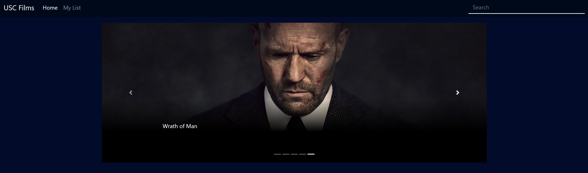
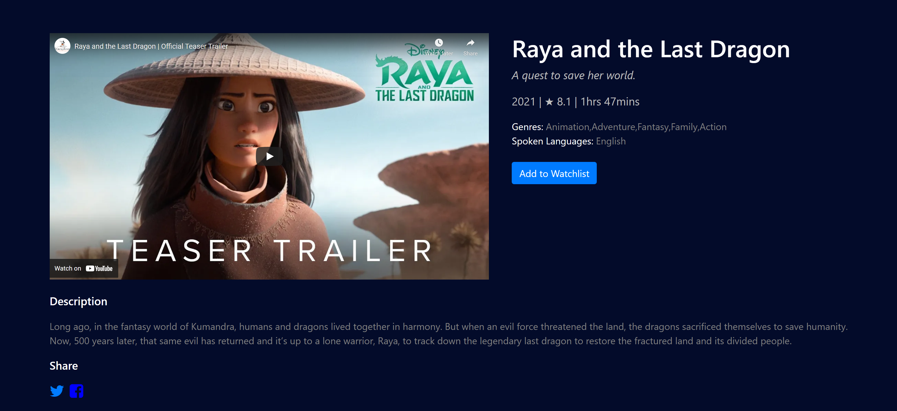
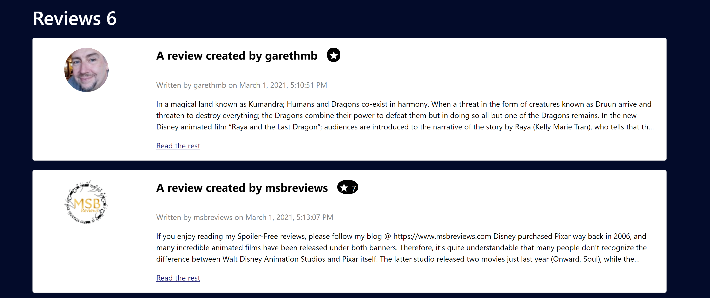
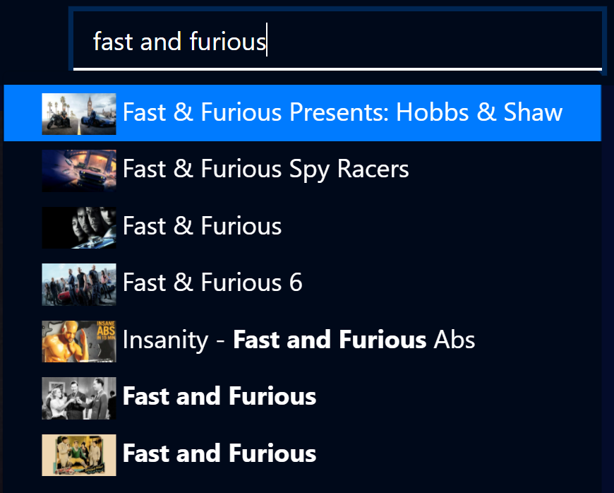
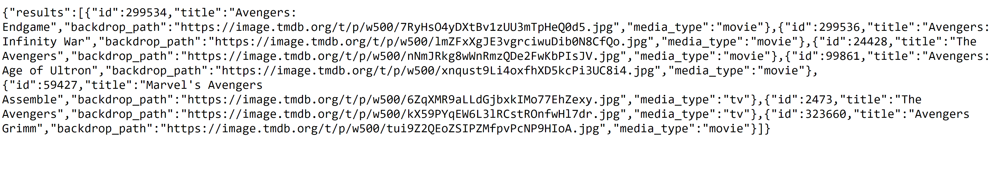
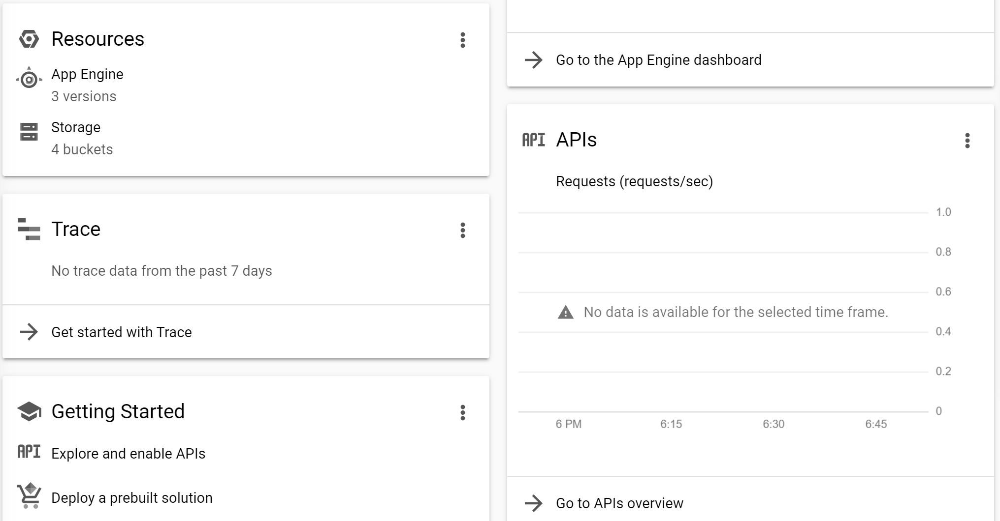

Movie Details: Website
This website is designed for users to be able to view a movie's details through The Movie Database, showcasing details, cast, reviews, and more backend data of a particular movie or TV show. The website design forced the dynamically served content through a backend built by Nodejs and Express as a proxy server. This proxy server split the load pressure by calling TMDB APIs in the backend, making it easier for the frontend to display the webpage under a heavier load. The frontend is built through Angular and Bootstrap, key frontend frameworks that make the design of the page much simpler to handle and makes the page easier to handle in building the frontend compared to deliberately creating the frontend with HTML and CSS.

The home page holds a carousel of the top five movies, allowing for easy access to recent movies and TV shows. Angular and Bootstrap 4 makes the creation of the carousel easy by providing a framework that allows me to create a smooth and intuitive user interface. Each movie in the carousel is clickable, allowing for smooth transitions to the details of the movie shown.
Home Page
The home page holds a carousel of the top five movies, allowing for easy access to recent movies and TV shows. Angular and Bootstrap 4 makes the creation of the carousel easy by providing a framework that allows me to create a smooth and intuitive user interface. Each movie in the carousel is clickable, allowing for smooth transitions to the details of the movie shown.

Carousels
The Carousels are created with Angular and Bootstrap as well, which expand the selection of movies and TV shows shown from the dynamic content. There are a total of six sets of carousels that showcase many different statistically pulled TV shows and movies. Each movie and TV show card is clickable in order to access the details of that particular movie or TV show.

Upon clicking a movie or TV show shown, an HTTP Request is sent to the TMDB API, the proxy server pulls the JSON to the frontend and shows the details in this page. This proxy server and backend is used instead of pulling the JSON directly from the frontend in order to enact load balancing, make the code modular and separate based on function, and practice different mechanics in web technology.
The details contain a multitude of features, including the title, description, tagline, rating, duration, release or air date, genres, spoken languages, a trailer which is propagated through a Youtube player feature downloaded from Nodejs' different packages, share features forming a link to facebook or twitter sharing the movie or TV show, and a watchlist feature allowing for adding wanted movies and TV shows to the watchlist.
Details Page
Upon clicking a movie or TV show shown, an HTTP Request is sent to the TMDB API, the proxy server pulls the JSON to the frontend and shows the details in this page. This proxy server and backend is used instead of pulling the JSON directly from the frontend in order to enact load balancing, make the code modular and separate based on function, and practice different mechanics in web technology.
The details contain a multitude of features, including the title, description, tagline, rating, duration, release or air date, genres, spoken languages, a trailer which is propagated through a Youtube player feature downloaded from Nodejs' different packages, share features forming a link to facebook or twitter sharing the movie or TV show, and a watchlist feature allowing for adding wanted movies and TV shows to the watchlist.

Detailed Cast
The cast is also pulled up from the particular movie. Each cast member is shown within a card system dynamically created by Angular and Bootstrap, allowing for dynamic content within the cast section. The cast each have an activation allowing for a modal box to be pulled up and showing details of the cast member, including links to popular social media of the cast member.
This section is mostly focused on frontend development and creating a better user interface for the user, as the proxy server's functionality is already done with the detail page pulling and the carousels in the home page. Everything further is just added fluff and details showing the inner workings of the movie or TV show pulled from the proxy server.

The user can also see the recent reviews of the search results. The section focuses on creating containers for the reviews. The reviews each contain their individual authors, date of writing, description up to a certain length, and overall rating given by the author.
Detailed Reviews
The user can also see the recent reviews of the search results. The section focuses on creating containers for the reviews. The reviews each contain their individual authors, date of writing, description up to a certain length, and overall rating given by the author.

Detailed Recommendations
The user can also see the recommendations of the particular movie or TV show, showing similar movies and TV shows to the currently viewed movie or TV show in the details page. These carousels and data are all repeated concepts from the home page carousels and the data is all from TMDB API. Nothing is truly new in this section, as everything has been done before in previous sections of this website.

The user can search for movies and TV shows at once using a search feature. The search feature dynamically creates links to different details pages, which are set to different routes from the home page.
Angular and Bootstrap make this search feature significantly cleaner to build, as the frameworks host easy to use search bars with documentation that demonstrate how to use the search features. These frontend frameworks make building a search tool very easy compared to building it with raw HTML, CSS, and JS. A particular constraint for the search feature is the lack of good performance in search, since searching needs to be dynamic and constant, generating details page links quickly to each movie and TV show details. The big benefit of using Angular here is that the performance is quicker, since Angular and Bootstrap allow for better performing searches through their own search bars.
Search
The user can search for movies and TV shows at once using a search feature. The search feature dynamically creates links to different details pages, which are set to different routes from the home page.
Angular and Bootstrap make this search feature significantly cleaner to build, as the frameworks host easy to use search bars with documentation that demonstrate how to use the search features. These frontend frameworks make building a search tool very easy compared to building it with raw HTML, CSS, and JS. A particular constraint for the search feature is the lack of good performance in search, since searching needs to be dynamic and constant, generating details page links quickly to each movie and TV show details. The big benefit of using Angular here is that the performance is quicker, since Angular and Bootstrap allow for better performing searches through their own search bars.

The proxy server is created using Nodejs and Express. A key part of why the backend was created is not only for load balancing, but also for the fact that the code is cleaner with Nodejs as a separation in the HTTP requests. For example, I can reuse this backend for another project (which happened to be mostly reused for the Android project), as the backend is separated from the frontend. Above is an example of a JSON request that is found directly from the proxy server, pulling multiple search results for both movies and TV shows based on a search for the keyword of "Avengers".
The Proxy Server and JSON
The proxy server is created using Nodejs and Express. A key part of why the backend was created is not only for load balancing, but also for the fact that the code is cleaner with Nodejs as a separation in the HTTP requests. For example, I can reuse this backend for another project (which happened to be mostly reused for the Android project), as the backend is separated from the frontend. Above is an example of a JSON request that is found directly from the proxy server, pulling multiple search results for both movies and TV shows based on a search for the keyword of "Avengers".

The backend and frontend are completely hosted on the Google Cloud Platform, allowing for dynamically generated content at will as long the service is still working via Google Cloud Platform. Google Cloud Platform allows me to adjust issues and fix bugs cleanly and easily, while keeping hosting on the cloud much simpler than if I were to go and host the web service directly using my own servers. I also have the power to start and stop the virtual machine at will, allowing me to display the content when I want to, conserving cost for hosting the service on the cloud.
Hosting on GCP
The backend and frontend are completely hosted on the Google Cloud Platform, allowing for dynamically generated content at will as long the service is still working via Google Cloud Platform. Google Cloud Platform allows me to adjust issues and fix bugs cleanly and easily, while keeping hosting on the cloud much simpler than if I were to go and host the web service directly using my own servers. I also have the power to start and stop the virtual machine at will, allowing me to display the content when I want to, conserving cost for hosting the service on the cloud.